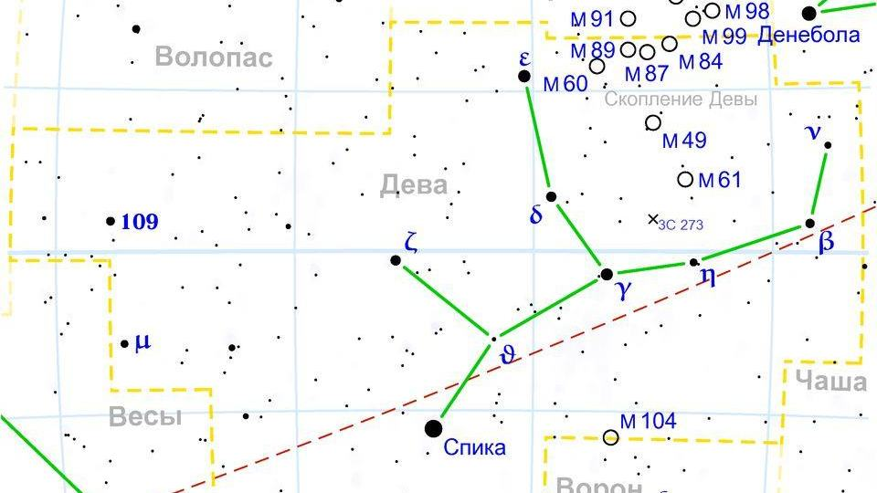

Başak burcu özellikleri: tarihleri, elementi ve uyumu

Görsel: Virgo constellation map ru lite · Anton Gutsunaev · Public domain · Wikimedia Commons
Başak, tropik zodyağın altıncı burcu sayılır ve yazın sonuna denk gelen hasat dönemini kapsar. Bu sayfada burcun tarihleri, gökyüzündeki takımyıldızı ve astrolojide bu burca atfedilen özellikler derlendi.
Başak burcu hangi tarihler arası?
Geleneksel tropik zodyakta Başak burcu 23 Ağustos ile 22 Eylül arasını kapsar. Geçiş anı yıldan yıla birkaç saat kaydığı için 22-23 Ağustos ve 22-23 Eylül doğumlularda doğum saati belirleyici olur.
Başak toprak grubundadır ve değişken nitelik taşır. Yönetici gezegeni Merkür, sembolü ise elinde başak demeti tutan genç kadın figürüdür. Değişken burçlar astrolojide mevsimin sonuna denk gelen burçlardır.
Toprak grubunun diğer üyeleri Boğa ve Oğlak'tır. Merkür hem İkizler'e hem Başak'a yönetici sayılır; İkizler'de sözlü iletişimle, Başak'ta çözümleme ve ayrıntıyla ilişkilendirilir.
Başak takımyıldızı gökyüzünde nerede?
Başak takımyıldızı, Latince adıyla Virgo, batıda Aslan ile doğuda Terazi arasında yer alır ve sekiz takımyıldızla sınır komşusudur. 1294 derecekarelik alanıyla zodyağın en büyük, tüm gökyüzünün ise Hydra'dan sonra ikinci büyük takımyıldızıdır.
En parlak yıldızı Spica'dır; 0,97 kadir parlaklıkta ve yaklaşık 250 ışık yılı uzaklıktadır. Aslında dört günde bir turunu tamamlayan çok yakın bir çift yıldız sistemidir. Takımyıldızın içinde, binlerce galaksi barındıran Başak Galaksi Kümesi bulunur.
Mitolojide figür, bereket tanrıçaları Demeter ve Persephone ile ya da yeryüzünü terk edip gökyüzüne çekilen adalet tanrıçası Astraia ile ilişkilendirilir. Spica'nın adı 'başak' anlamına gelir; Babil geleneğinde de bölge tahılla anılırdı. Sonbahar ekinoksu noktası bugün bu takımyıldızdadır.
Başak burcuna atfedilen özellikler neler?
Astrolojide Başak burcuna düzen sevgisi, ayrıntıya dikkat, çözümleme yeteneği ve yardımseverlik atfedilir. Geleneksel yorumda bu burcun işi doğru yapmayı, gösterişten çok işleyişi önemsediği söylenir.
Zorlanılan yanlar olarak aşırı eleştirellik, mükemmeliyetçilik ve gereksiz endişe sayılır. Bunlar ölçülmüş özellikler değil, astroloji metinlerinde yüzyıllardır tekrarlanan tanımlardır.
İş hayatında bu burca düzeltme, planlama, sağlık ve teknik ayrıntı gerektiren alanlara yatkınlık atfedilir. İlişkilerde ise sözden çok davranışla ilgi gösterme ve yavaş güven kurma öne çıkarılır.
Bu aralıkta doğan tanınmış isimler arasında Lev Tolstoy (9 Eylül 1828), Agatha Christie (15 Eylül 1890) ve Freddie Mercury (5 Eylül 1946) sayılabilir. Ortak bir kişilik profilleri olduğu iddiası doğrulanabilir değildir.
Başak burcu hangi burçlarla uyumlu sayılır?
Geleneksel uyum yorumunda Başak'ın aynı elementten Boğa ve Oğlak ile kolay anlaştığı söylenir. Su grubundan Yengeç ve Akrep de tamamlayıcı sayılır; gerekçe olarak ortak ölçülülük ve güven arayışı gösterilir.
Zorlu kabul edilen eşleşmeler genelde İkizler ve Yay'dır; üçü de değişken nitelik taşıdığı için yorumlarda öncelik belirleme güçlüğü vurgulanır. Bu tablolar astrolojinin kendi kurallarına dayanır, ilişki sonucunu öngörmez.
Astroloji kişiliği ölçmez ve bilimsel bir sınıflandırma değildir; buradaki özellikler kültürel bir geleneğin yorumlarıdır, merak ve eğlence için okunur.
Takip etmek için
- Yükselen burcunu hesapla
- Burç uyumu tablosuna bak
- Toprak grubu burçlarını karşılaştır
Yükselen Başak
Yükselen Başak hangi saatlerde doğar? İstanbul, Ankara ve İzmir için 12 ayın saat aralıkları: Yükselen Başak saat kaç. Kendi yükseleninizi doğum saatinizle yükselen burç hesaplama aracında bulabilirsiniz.
Sık sorulan sorular
Başak burcu hangi gün biter?
Geleneksel tarih aralığı 22 Eylül'de sona erer ve Terazi başlar. Bitiş sonbahar ekinoksuna bağlı olduğu için bazı yıllarda 23 Eylül'e kayar; sınır doğumlularda doğum saatine bakılır.
Başak takımyıldızı neden bu kadar büyük?
Takımyıldız sınırları 1922 ve 1930'da Uluslararası Astronomi Birliği tarafından gökyüzünü boşluksuz bölecek şekilde çizildi. Başak bu paylaşımda 1294 derecekare aldı ve gökyüzünün ikinci büyük takımyıldızı oldu.
Spica'yı nasıl bulurum?
Büyükayı'nın kuyruğundan devam eden yayı izleyin: önce Arcturus'a, oradan aynı doğrultuda devam edince Spica'ya ulaşırsınız. İlkbahar ve yaz akşamlarında güney gökyüzünde parlak ve mavimsi görünür.
Kaynaklar: Wikipedia – Virgo (constellation), Wikipedia – Spica (yıldız verileri), IAU takımyıldız alan ve sınır listesi.